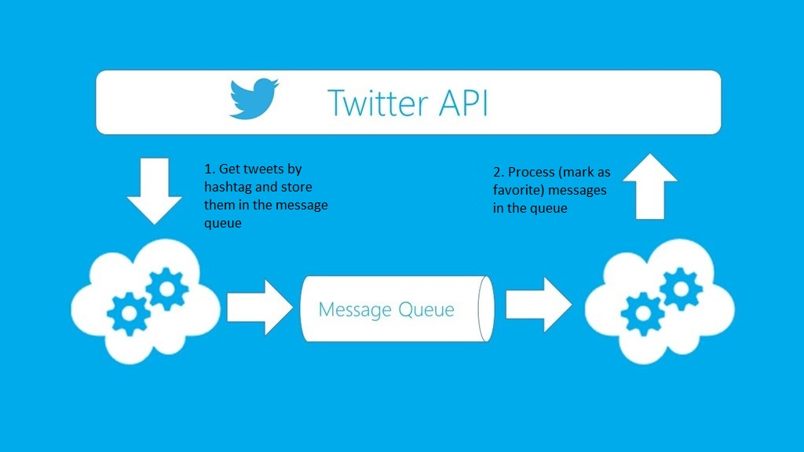

<main role="main" class="container">

  <div class="starter-template">
    <h1>Page2</h1>
    <p class="lead">Twitter Engine</p>
    
    <div class="subFooter" >
        <button type="button" class="btn btn-primary btn-lg" (click)="nextPage()">Next</button>
    </div>
  </div>


</main><!-- /.container -->
